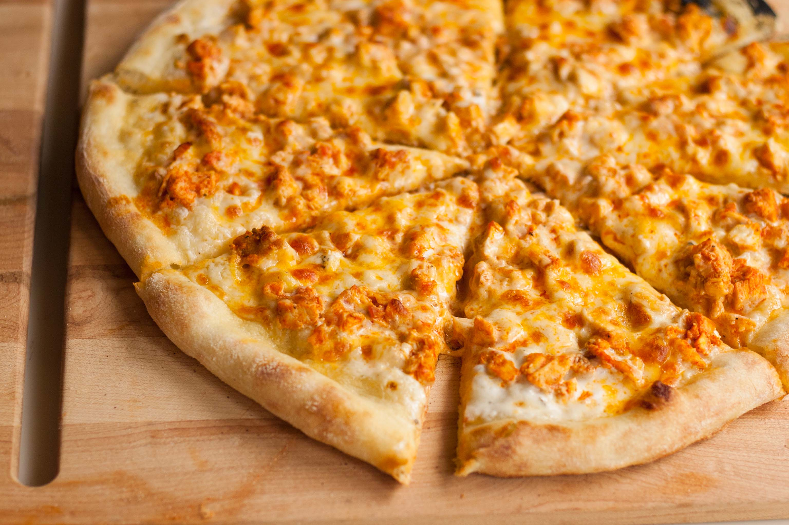

About us
Bruno's Pizzeria is a family-owned-and-operated pizza restaurant in Elizabeth, New Jersey, that serves authentic Italian cuisine for customers that have a taste for delicious food. Whenever you dine with us, you'll enjoy great food and friendly faces. For more than 39 years, our restaurant has offered a huge selection of pizzas, specialty pizzas, dinner, desserts, and sandwiches. No matter what you crave, we've got it on our menu. Our freshly made pizzas, sandwiches, dinners, and desserts are sure to "wow' your taste buds and keep you coming back for more. Actively Involved in Various Sponsorships and Community Work with the Local Fire Department, Police Department, and Local Schools.
history of Bruno's Pizzeria
Bruno's Pizzeria is a family-owned-and-operated pizza restaurant in Elizabeth, New Jersey, that serves authentic Italian cuisine for customers that have a taste for delicious food. Whenever you dine with us, you'll enjoy great food and friendly faces. For more than 39 years, our restaurant has offered a huge selection of pizzas, specialty pizzas, dinner, desserts, and sandwiches. No matter what you crave, we've got it on our menu. Our freshly made pizzas, sandwiches, dinners, and desserts are sure to "wow' your taste buds and keep you coming back for more. Actively Involved in Various Sponsorships and Community Work with the Local Fire Department, Police Department, and Local Schools.
Menu
chicken pizza
Place pizza crust on a medium baking sheet. Spread the crust with barbeque sauce. Top with chicken, cilantro, pepperoncini peppers, onion, and cheese. Bake in the preheated oven for 15 minutes, or until cheese is melted and bubbly.
Pepperoni pizza

Image result for pepperoni pizza description Pepperoni pizza is a classic favorite, and in less than 20 minutes, you can make this light and healthy version. The whole wheat crust has more fiber and nutrients than a white flour crust, and using part-skim mozzarella saves on calories without compromising any flavor.